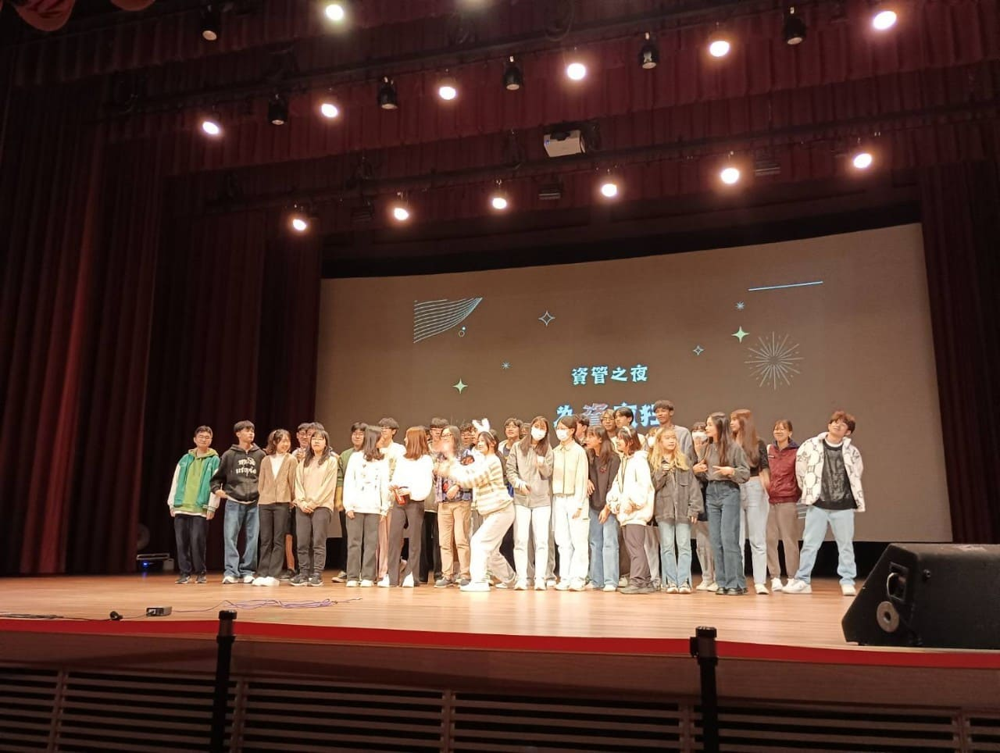
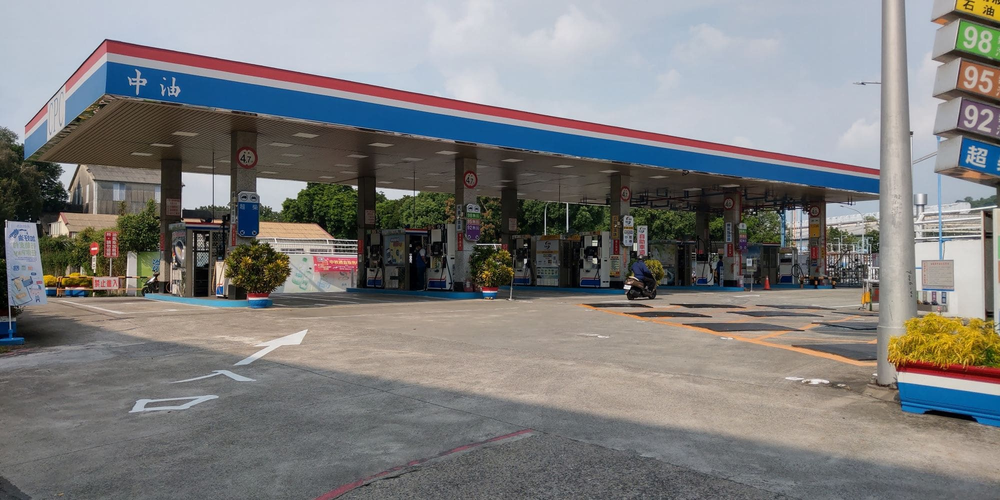

生日：2004/12/6
學校科系：中原大學資訊管理學系
興趣：聽音樂、看電影、閱讀
個性：溫和、冷靜
座右銘：
Bad ending是很可惜，但看看過程，那才是最重要的東西

非你不可，一起來縫
這是管理學上的分組活動， 主要是在讓我們了解像非洲之類條件不發達地區的女性在生活中的困境， 並由我們親手為她們縫製布衛生棉。 這個活動讓我察覺到， 在我們可以豐衣足食， 不必為生計擔憂世界上， 還是有許多人連健康的活著都是件不容易的事。

資管之夜
這是系上舉辦的活動， 也是我第一次參加的活動。 雖然我本人挺社恐的， 擔心會不會和其他人相處不來。 不過我還是挺慶幸有參與這個活動， 它讓我經歷一群人共同努力的過程， 感受到大家一起把一件事情做好的感動。
便利商店
這是我打的第一份工，它讓我真正第一次感覺到大人們說的賺錢的辛苦。 我一直以為便利商店店員挺簡單的，但我發現在便利商店工作有很多不同種類的機台， 好像什麼都要會一點，還得面對各式各樣奇怪的客人。 這個經歷也讓我在面對不同職業的人都能有更好的心態和態度， 因為我知道每個職業都有它辛苦的地方。

加油站
加油站這份工作是我人生重要的一個轉捩點， 因為我和我的家人共同討論下，認為我已經成年了， 該有自己賺錢養活自己的能力了。 所以它是我沒有生活費之後的唯一經濟來源， 算是我更加獨立的一個過程見證。